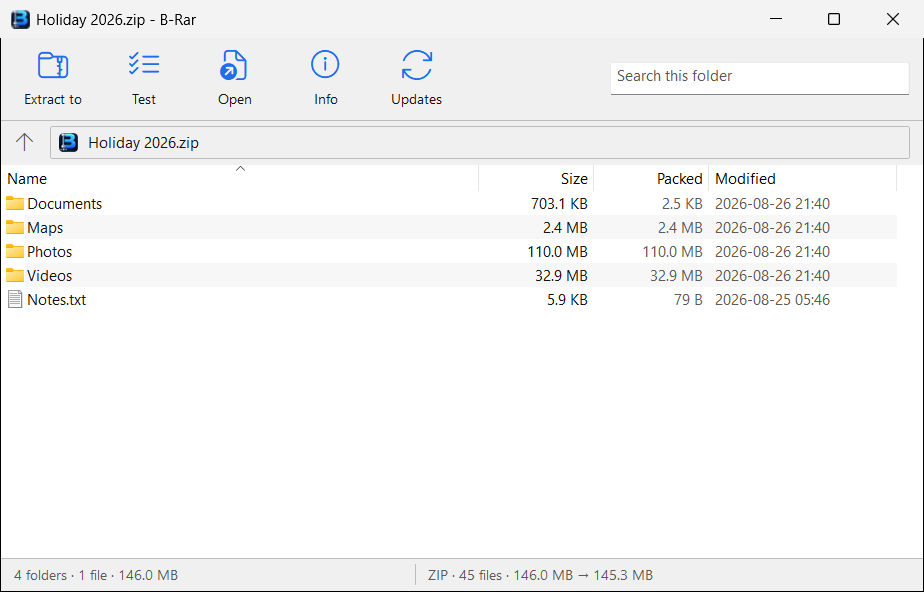

Archives, extracted. Fast.
B-Rar opens ZIP, RAR, 7z and tar archives and extracts them faster than WinRAR and 7-Zip, using every core of your computer, on Windows and Mac. Right-click any archive in File Explorer or Finder, or look inside first and take out just what you need. It makes ZIP archives too.
Not using Homebrew? Download the app (B-Rar-<version>-macos.zip) and drag it to Applications.
brew install --cask ahmedanjum30/tap/b-rarExtracting to E:\Games
- Elapsed
- 0:04
- Processed
- 5.6 GB of 9.6 GB
- Left
- 0:04
- Speed
- 1.3 GB/s
- Files
- 44
Done: 77 files extracted, no errors
Game assets.zip
- Size
- 9.6 GB
- Time
- 7.5 s
- Folders
- 2
- Speed
- 1.3 GB/s
Saved to E:\Games
A live replay of a real extraction: 9.6 GB, 77 files, in 7.5 seconds. Try Pause.
Faster than WinRAR and 7-Zip
Time to extract, on the same PC (16 threads, NVMe SSD). Shorter is better.
RAR5 archive
1.1 GB, 79 files
RAR5 archive with many small files
48,000 files, 1 GB
ZIP archive
1.2 GB, 79 files
ZIP archive on a Mac
M3 Pro · 3.4 GB, 20,008 files
One run per tool, all cores (on the Mac, best of three; ditto is what Archive Utility extracts with). On a 1.1 GB 7z archive made with 7-Zip's defaults, B-Rar takes 3.8 s, 7-Zip 3.9 s, WinRAR 5.0 s. Full method and every result: benches/RESULTS.md.
Everything an extractor should do
Fast where it counts, out of your way everywhere else.

| Name | What it does |
|---|---|
| Every core at once | Files are extracted in parallel, so a big archive finishes in a fraction of the time. B-Rar has its own decoders for RAR5, ZIP and 7z. |
| Right-click menu | In the short Windows 11 menu: Open in B-Rar, Extract files..., Extract to "folder\", Extract here and Test archive. On a Mac, in Finder's Quick Actions. |
| Look inside first | Browse an archive's folders, search it, open a single file, and extract only the files and folders you pick. |
| Passwords | Asks when an archive is encrypted, including archives with encrypted file names: AES ZIP, ZipCrypto, 7z and RAR. |
| Archives in parts | RAR volumes (.part1.rar, .r00) and split archives (.001). Start from any part; a missing part is named. |
| Safe by default | Asks before replacing a file (replace, skip or keep both), keeps files inside the folder you chose, and checks every file's checksum. |
Opens what you download
Every common archive format, including the ones Windows can't open on its own.
| Format | Inside |
|---|---|
| ZIP | Deflate, Deflate64, BZip2, LZMA, XZ, Zstandard, PPMd; AES and ZipCrypto |
| RAR | RAR 4 and RAR 5, solid, encrypted and multi-volume |
| 7z | LZMA, LZMA2, PPMd, BZip2, Deflate, Zstandard, LZ4, Brotli, BCJ2 and the other filters, AES |
| tar | .tar, .tar.gz, .tar.xz, .tar.zst, .tar.bz2, and single .gz, .xz, .zst, .bz2 files |
From the command line too
The same engine, from any terminal: B-Rar is on your PATH once it's installed.
# extract to a folder named after the archive B-Rar x archive.rar # somewhere else, without asking about existing files B-Rar x archive.zip -o D:\out -y # only some files and folders B-Rar x archive.7z docs photos/2026 # list, or check every file without writing anything B-Rar l archive.7z B-Rar t archive.7z
Questions
Didn't find yours? Open an issue on GitHub.
Is B-Rar free?
Yes, for personal and other non-commercial use, with every feature included. There are no ads, no trial and no paid version. If you'd like to support it, there's Patreon.
Can B-Rar create archives?
ZIP archives, yes: right-click files or folders, B-Rar, and choose Add to archive... (name, compression level, an AES-256 password if you like) or Add to "name.zip", or run B-Rar a backup.zip folder. It compresses on every core. It doesn't make RAR or 7z archives.
Why is it faster than WinRAR and 7-Zip?
It extracts many files at once, on every core, and writes them in the background while it keeps decoding. RAR5 archives use B-Rar's own decoder, which is faster than 7-Zip's even on a single core, and ZIP uses B-Rar's own Deflate decoder, faster than libdeflate on large files, which even splits a single big file across all your cores. 7z archives use B-Rar's own LZMA2 decoder.
Where's the right-click menu?
Right-click any archive in File Explorer and pick B-Rar. On Windows 11 it's under Show more options; the Microsoft Store version puts it in the short menu.
Is there a Mac version?
Yes, for Macs with Apple Silicon (M1 or later) on macOS 13 or later. Install it with Homebrew: brew install --cask ahmedanjum30/tap/b-rar; brew upgrade keeps it up to date. It's a native Mac app around the same engine, with the archive browser and the same questions as on Windows. In Finder, right-click an archive and choose Quick Actions (or Services) for B-Rar: Extract Here, Extract to Folder, Extract Files…, Open in B-Rar and Test Archive, or files and folders for Add to ZIP and Add to Archive…. Homebrew also adds the brar command line. Zipped apps keep their links and signatures, as with Archive Utility. It's fast there too: on an M3 Pro, a 3.4 GB ZIP of 20,008 files extracts in 2.3 s, against 11.0 s with ditto (Archive Utility's engine), 10.4 s with bsdtar and 22.7 s with unzip. Or download B-Rar-<version>-macos.zip from the latest release and drag B-Rar to Applications; the first time, right-click it and choose Open, since it isn't signed with an Apple Developer ID yet. Intel Macs aren't supported yet.
Windows says "Windows protected your PC"
Click More info, then Run anyway. The installer isn't code-signed yet, so Windows doesn't know the publisher; the Microsoft Store version is signed by Microsoft and doesn't show this. The installer is built from the public source by the project's release workflow; you can check it against SHA256SUMS.txt on the release page.
Is it in the Microsoft Store? Can I install it with winget?
Yes: B-Rar on the Microsoft Store, or winget install 9MZKQXC7PFCH in a terminal. The Store version adds B-Rar to the short Windows 11 right-click menu and updates through the Store. It can't ask for administrator rights, so to extract into Program Files, run B-Rar as administrator from the Start menu. The installer above updates itself too: B-Rar says when a new version is out.
Does it send my data anywhere?
No. B-Rar only asks GitHub whether a newer version is out, and downloads it when you click Update (the Microsoft Store version doesn't connect to the internet at all). See the privacy policy.
Can I use it at work?
B-Rar's license (PolyForm Noncommercial) allows personal use and use by charities, schools and public institutions, but not commercial use. For commercial use, get in touch on GitHub.
Try it on your next download
Install B-Rar, then right-click any archive.
- Opens
- ZIP, RAR, 7z, tar
- Makes
- ZIP
- Runs on
- Windows 10 and 11, Mac
- Price
- Free for personal use